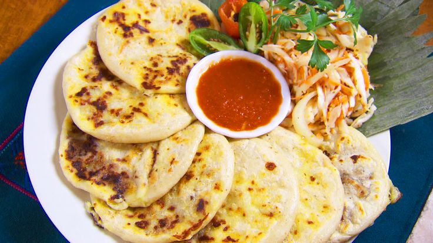

Apastepeque, joya cultural de El Salvador, te invita a explorar su rica historia, deliciosa gastronomía y vibrantes tradiciones.
Sobre Apastepeque
.jpg)
Historia
Orígenes Precolombinos
Los orígenes de Apastepeque se remontan a la época precolombina, con asentamientos indígenas que datan de siglos atrás.
Época Colonial
Durante la colonia, Apastepeque se convirtió en un importante centro de comercio y cultura.
Gastronomía
Platos Típicos
- Pupusas de Apastepeque
- Yuca frita con chicharrón
- Tamales de elote

Artesanías
Tejidos Tradicionales
Los coloridos tejidos de Apastepeque son famosos por su calidad y diseños únicos.
Alfarería
La cerámica local refleja técnicas ancestrales transmitidas por generaciones.
Festividades
Fiestas Patronales
Las fiestas en honor a San Pedro Apóstol, del 24 al 29 de junio, son el evento más importante del año.
Lugares Emblemáticos
Iglesia Santiago Apóstol
Joya arquitectónica colonial y centro espiritual de la comunidad.
Laguna de Apastepeque
Belleza natural que ofrece actividades recreativas y hermosos paisajes.
.jpg)